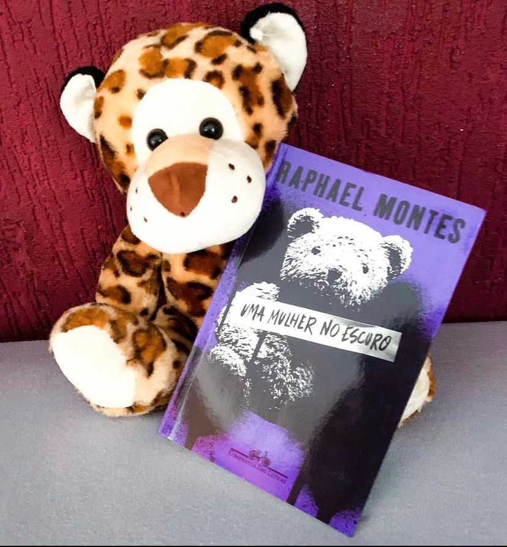

Uma Mulher no Escuro
(Raphael Montes - Companhia das Letras)
⭐⭐⭐⭐
⚠️Gatilhos: Abuso Sexual, Violência.
A cada livro do Raphael Montes me surpreendo mais com a escrita e mesmo não tendo digerido jantar secreto, resolvi me jogar nessa leitura maravilhosa.
Victoria Bravo tinha apenas 4 anos quando sua família foi brutalmente assassinada por um assassino que estaqueou e pichou seus rostos com tintas pretas. A garota foi a única sobrevivente.
Hoje ela é uma garota solitária, e tímida com sérios problemas para se relacionar e confiar nas pessoas, além de pesadelos recorrentes.
O passado bate a porta de Victoria e ela não sabe em quem pode confiar. Agora ela precisa enfrentar o seu passado que a levará a zonas obscuras e talvez um amor.
Um psiquiatra, um amigo feito pela internet e um possível namorado ― qual dos três homens está usando tudo o que sabe para aterrorizar a vida de Vic? E o que afinal ele quer com ela?
Preciso destacar que por motivos pessoais esposos eu me afeiçoei muito a Victoria e consegui entender seus toques, medos e manias. É uma personagem extremamente bem construída.
O leitor tem contato com os desejos e planos do assassino sem saber quem ele é, apenas pelos seus pensamentos e as vezes movimentos que quer fazer. A trama é lenta e as vezes chega a ser um pouco tedioso, apesar disso é difícil largar o livro de lado porque você precisa saber tudo!
Pra mim a solução do suspense logo se tornou óbvia, talvez o leitor tenha sido subestimado mas, ainda podemos contar com uma reviravolta no final.
O livro é bom e vale a pena, principalmente pela construção da protagonista e de todo mistério.